Table Of Contents
Previous topic
eartH2Observe Downscaling tools

eartH2Observe Downscaling tools
The radiation module can be used to create celar sky radiation estimates using a (high resolution) digital elevation model. In turn, these results can be used by the evaporation module to better estimate local evaporation.
The folowing command takes the digital elevation model wflow_dem.map and calcilate the radiation components for day 1 to 366 and save these as a pcraster mapstack. The internal timesteps is set to 60 minutes and the calculations are done for 5 hr in the morning to 22 hour at night.
e2o_radiation.py -S 1 -E 366 -D wflow_dem.map -O output_rad -s 5 -e 22 -T 60 -f PCRaster
Determine clear sky radiation over a Digital Elevation Model.
Usage:
e2o_radiation -D DEM [-d DEM][-O outputdir][-S start day][-E end day]
[-M][-x lon][-y lat][-h][-l loglevel][-T minutes]
-D DEM Filename of the digital elevation model
-d DEM option loc resolution dem to determien heigth correction for
-O outputdir (default is . )
-S Startday - Start day of the simulation (1 Jan is 1)
-E EndDay - End day of the simulation
-T minutes - timeresolution in minutes (60 default is 1 hour)
-M The DEM xy units are in metres (instead of lat/lon)
-x longitute of the map left (if map xy in metres)
-y lattitude of the map bottom (if map xy in metres)
-l loglevel Set loglevel (DEBUG, INFO, WARNING,ERROR)
-s start hour (per day) of the calculations (default =1)
-e end hour (per day) of the calculations (default = 23)
-h This information
-f output format as a gdal type string (http://www.gdal.org/formats_list.html) Default is PCRaster
-p add the file format string as a postfix to all filename (default is False)
The program produces the following map stacks, one for each day of the year:
COR00000.??? - Total clear sky radiation on DEM
SUN00000.??? - Nr of time intervals a pixel was in the sun
FLAT0000.??? - Total clear sky radiation on a flat surface
CORDIR00.??? - Direct clear sky radiation on DEM
FLATDIR0.??? - Direct clear sky radiation on a flat surface
Generate radiation masp for a number of days
| Parameters: |
|
|---|---|
| Returns: | Nothing |
Determines radiation over a DEM assuming clear sky for a specified hour of a day
| Variables: |
|
|---|---|
| Return Stot: | Total radiation on the dem, shadows not taken into account |
| Return StotCor: | Total radiation on the dem taking shadows into acount |
| Return StotFlat: | |
Total radiation on the dem assuming a flat surface |
|
| Return SUN: | Map with shade (0) or no shade (1) pixels |
| Return OptCOr: | Correction factor for atmosphere of Altitude DEM |
| Return AltOptcor: | |
Correction factor for atmosphere of AltAltitude DEM |
|
Determine cellength. Always returns the length in meters.
| Parameters: |
|
|---|---|
| Returns: |
Determines the length of one degree lat/long at a given latitude (in meter). Code taken from http:www.nga.mil/MSISiteContent/StaticFiles/Calculators/degree.html
| Parameters: | lat – map with lattitude values for each cell |
|---|---|
| Returns: | length of a cell lat, length of a cell long |
| Parameters: | argv – See usage |
|---|---|
| Returns: |
| Parameters: | args – |
|---|---|
| Returns: |
Adjusted after van Dam 2000
This section gives a short description. Another description can be found at http://re.jrc.cec.eu.int/pvgis/pv/solres/solres.htm.
Potential solar radiation is the radiation of an unobstructed or cloudless sky. The magnitude of the potential solar radiation depends on the position of the sun the solar altitude or solar angle during the day, the inclination of the solar rays with the earth’s surface, the amount of radiation at the outer layer of the earth’s atmosphere, the transmissivity of the sky and the altitude of the earth’s surface.
Solar declination is the annual fluctuation of the sun between the two tropics and varies between –23 and +23 degrees latitude. Solar declination is calculated per Day (Julian day number):
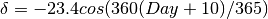
The hour angle describes the movement of the sun around the earth in 24 hours,
which equals 15 degrees longitude per hour (360  /24h). The hour angle n
is calculated for each Hour (whole hour of the day):
/24h). The hour angle n
is calculated for each Hour (whole hour of the day):
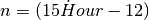
The position or height of the sun above the horizon is called the solar altitude
or solar angle. Solar altitude  (deg) is calculated for each location,
determined by the location’s latitude
(deg) is calculated for each location,
determined by the location’s latitude  (deg), declination and hour angle:
(deg), declination and hour angle:
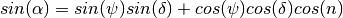
Solar azimuth is the angle between the solar rays and the North-South axis of the earth. Solar azimuth 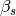 (deg) is calculated by:
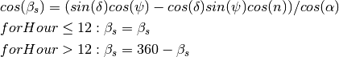
Surface azimuth or aspect 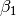 (deg) is the orientation of the land surface or slope to the North-South axis of the sun. Slope 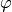 (deg) is the maximum rate of change in elevation.
The angle of incidence is the angle between the perpendicular plane of the
incoming solar rays and the surface on which they are projected, defined by the
aspect and slope of that surface. The angle of incidence  (deg) is
calculated with the solar angle (deg), the slope of the land
surface (deg), the azimuth of the sun (deg) and
azimuth of the land surface (deg):
(deg) is
calculated with the solar angle (deg), the slope of the land
surface (deg), the azimuth of the sun (deg) and
azimuth of the land surface (deg):

The second section of the radiation module calculates the potential solar energy. The amount of solar radiation that reaches the outer atmosphere is decreased by the travelling distance of the solar rays through the sky to the surface, the transmissivity of the sky and the cloud factor.
Solar energy at the outer layer of the atmosphere 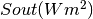 is calculated by (Kreider & Kreith 1975):
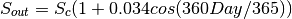
where 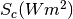 is the solar constant of 1367 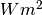 (Duffie & Beckman 1991). The solar ‘constant’ is subject to much discussion. Gates (1980) gives a value of 1360 . The NASA reports a value of 1353 (Jansen 1985), while Duncan et al. (1982) give a value of 1367 . Monteith and Unsworth (1990) measured the highest value of 1373 W.m-2. The World Radiation Centre uses a value of 1367 (Duffie & Beckman 1991) and this value is also used in this study.
The solar radiation energy that reaches the earth’s surface is decreased due to the
length of the air mass it has to pass through and the transmissivity  (% or fraction) of the sky. The radiation flux through a hypothetical plane
normal to the beam (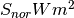) is given by (Gates 1980):
(% or fraction) of the sky. The radiation flux through a hypothetical plane
normal to the beam (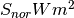) is given by (Gates 1980):
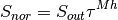
in which Mh (% or fraction) is the relative path length of the optical air mass at
altitude h (m). Transmissivity () is usually between 0.5 and 0.8, but can be as low
as 0.4 in the tropics (Whitmore et al. 1993), but mostly a value of 0.6 is used
(Gates 1980). To calculate the relative path length of an optical air mass at
altitude h (m), the relative path length of an optical air mass at sea level M0
(% or fraction) is corrected for the atmospheric pressure at altitude h. Mh
(% or fraction) is calculated using (Kreider & Kreith 1975):
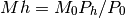
in which 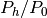 (mbar.mbar-1) is an atmospheric pressure correction. The relative path length of the optical air mass at sea level M0 is obtained by (Kreider & Kreith 1975):
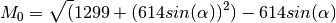
The atmospheric pressure correction is written as (List 1984):
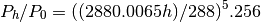
The incoming radiation normal to the beam Snor must be corrected by the orientation and
slope of the surface, defined by the angle of incidence , to calculate the incoming radiation
Sdir () on the earth’s surface:
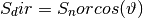
Direct light is scattered in the atmosphere. This daylight scattering or diffuse radiation is approximately 15% of direct radiation (Gates 1980). A more accurate empirical estimation for diffuse radiation Sdif () in a clear not dust-free sky reads as (Liu and Jordan in Gates 1980):
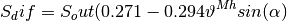
During daylight when the sun is above the horizon, it is assumed that all cells receive the same amount of diffuse radiation. Total incoming radiation Sin () is the sum of direct and diffuse radiation:
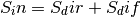
Total incoming radiation Sin as calculated with the above is actually a radiation flux for that moment. In the procedure given above, radiation is calculated per time step. If this amount of radiation is used in a water balance model, the amount of radiation and therewith the amount of evapotranspiration will be overestimated or under estimated, depending on the time of the day and the position of the sun.
Most of the work done for the shading is implemented in the pcraster horizontan function.
The image below show the difference between the average daily clear sky radiation on a flat surface compared to the actual radiation received by each grid cell for julian day 180. IN the steep terrain of the Snowy Mountains of the mUrumbidgee catchment differences can be up to 30 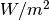 on this 1x1km DEM.
Difference in between horizontal surface radiation and inclined surface radiation
{kind=link}